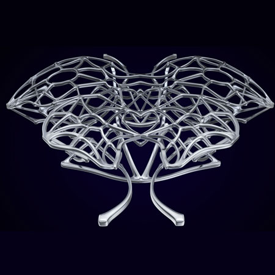
A collection of several independent and collaborative projects that make heavy use of the potential of digital tools. These range from formal explorations to detail modeling, rendering, and visualisation.
[-] Spatial Analysis
Digitally-realised drawings as part of a Human Factors course. Analysis was conducted on a communal area in the Gates Center for Computer Science. The following attempt to dynamically display varying inhabitation on an otherwise static piece of architecture.
[-] Lines of Sight
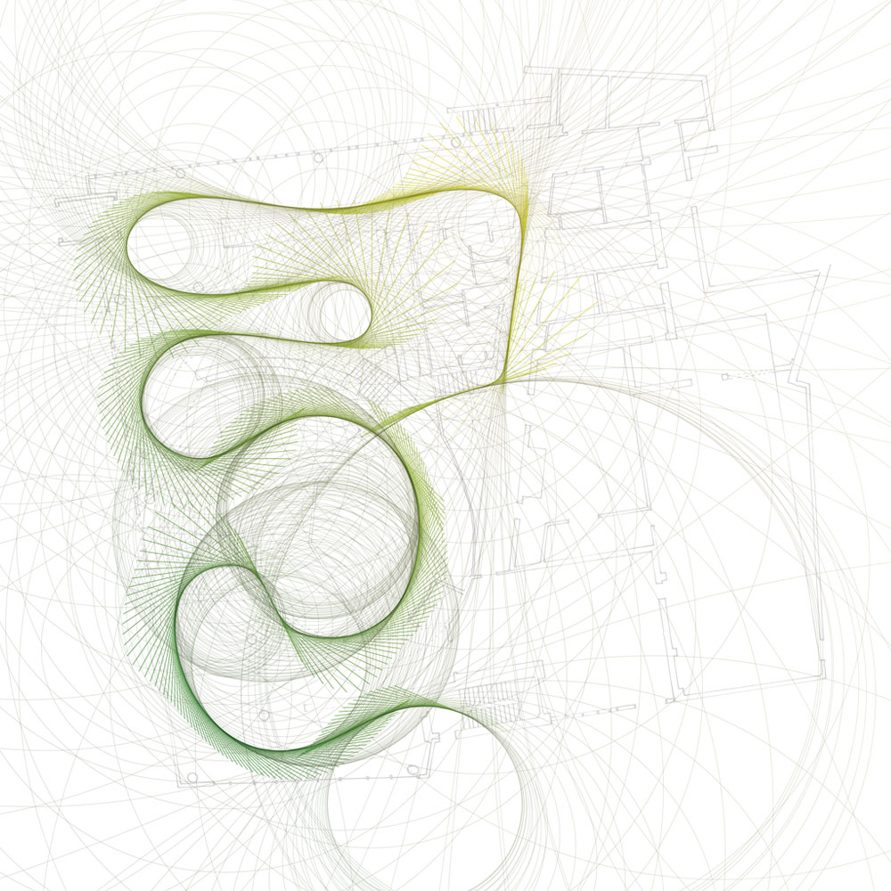
[-] Accumulated Circulation Curves
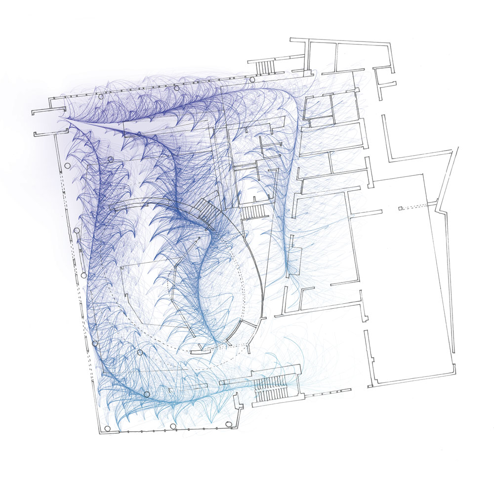
[-] Ambient Sound Density
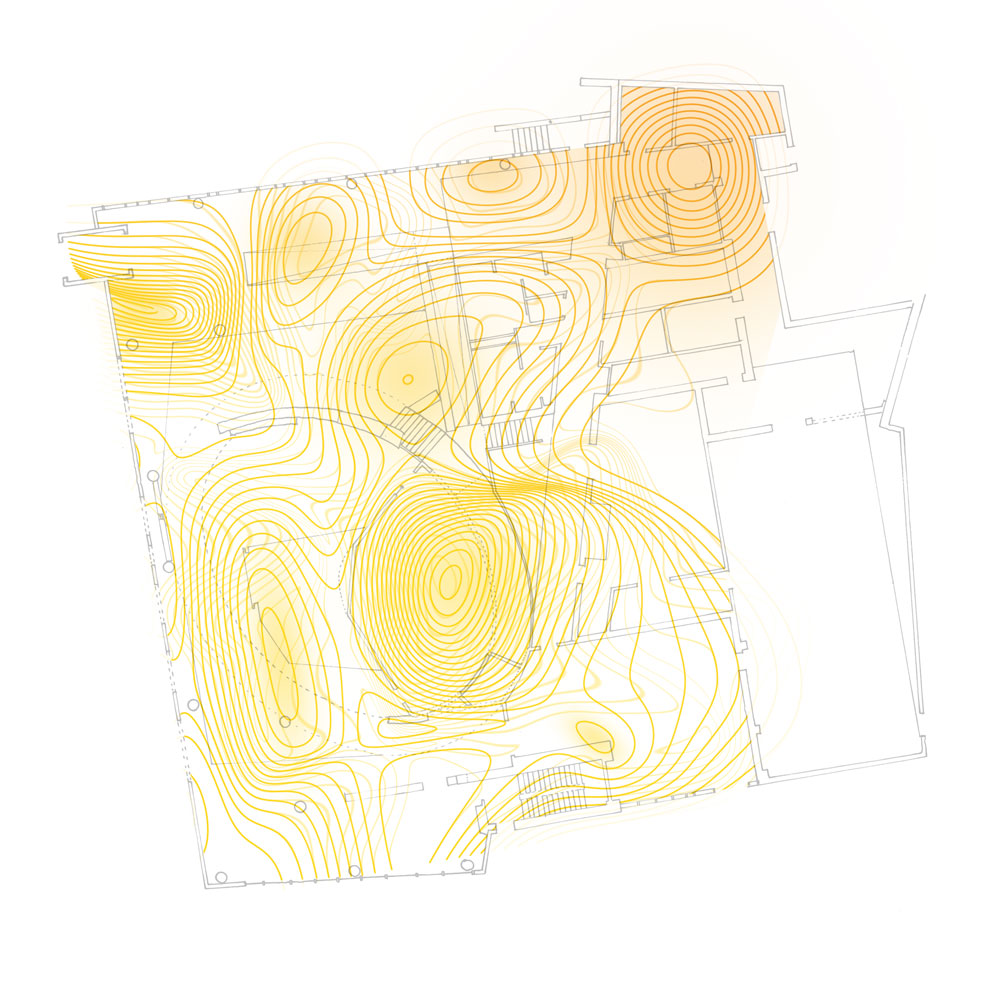
[-] Grow Atlas
The Grow Atlas is a one-week, in-depth urban context analysis and exploration of conditions around a target building site with a focus on the development of urban agriculture. I led a twelve-person team in this sprint project to assess and visualise the Neighborhood Planning aspect. We researched historical conditions, economic realities, and master plans to generate a reference 'atlas' of site conditions, social changes, and local policy for later reference during a design project.
In collaboration with: S. Adamski, D. Chen, S. Dawalbhakta, A. Fleck, H. Kedia, J. Park, R. Smith, S. Tong, S. Zhen, Y. Zhou. Fall 2016.
[-] Activity and Statistics
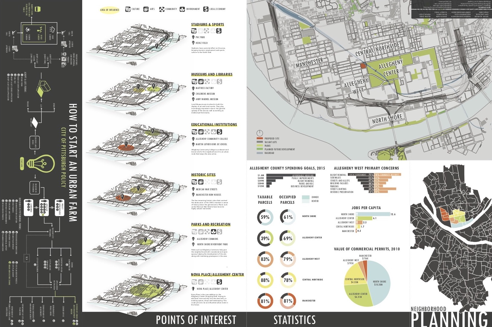
[-] Neighborhood Evolution
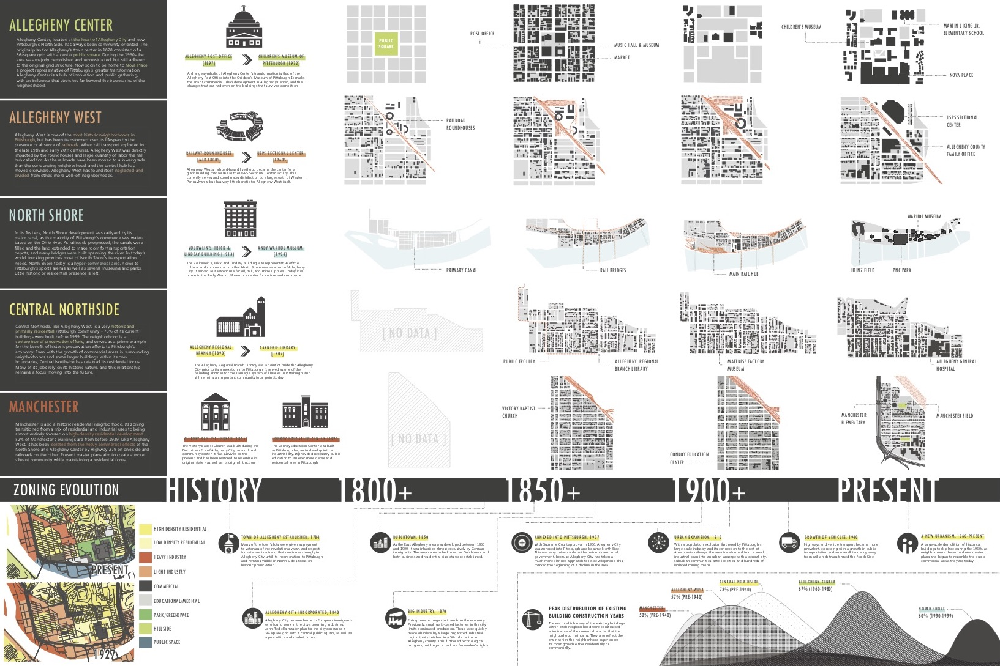
[-] Organic Spaces
A study butterfly using Autodesk T-Splines to create organic connections that resemble a skeletal system. Of particular focus were the intersection nodes between membranes. The project renderings reimagine the skeleton as something that can begin to take on various spatial and luminous aspects.
[-] Conceptual Rendering
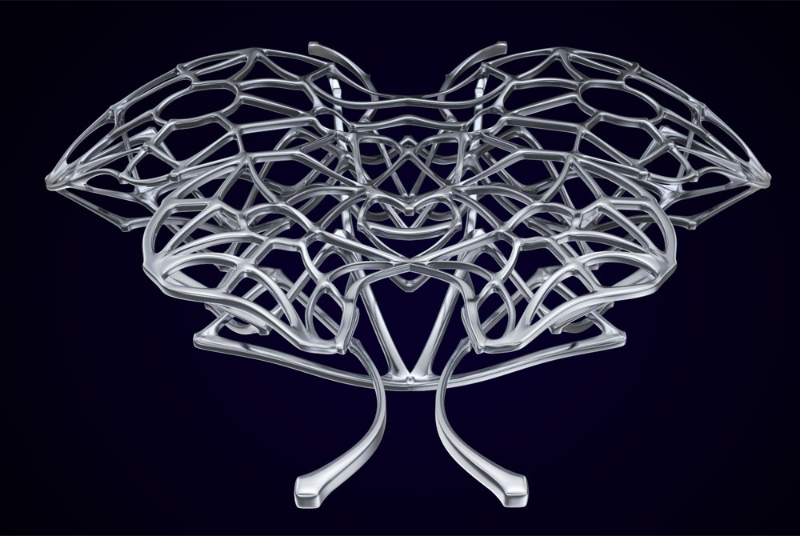
[-] Conceptual Rendering
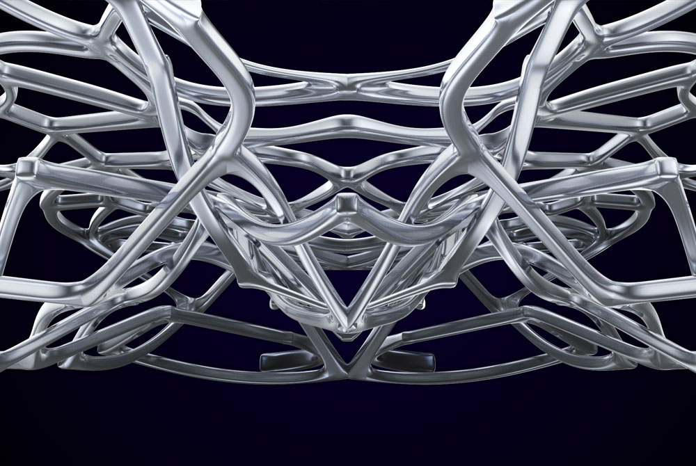
[-] Conceptual Rendering
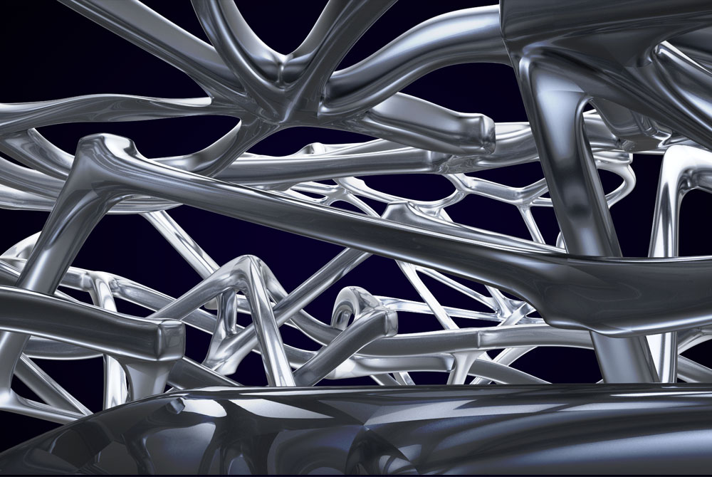
[-] Flythrough Animation
[-] Rendering Studies
Studies in rendering - from scratch models and materials baked through found images. Surface models in Rhino3D, rendering in V-Ray, minimal postprocessing in Adobe Photoshop.
[-] Camera Surface Model
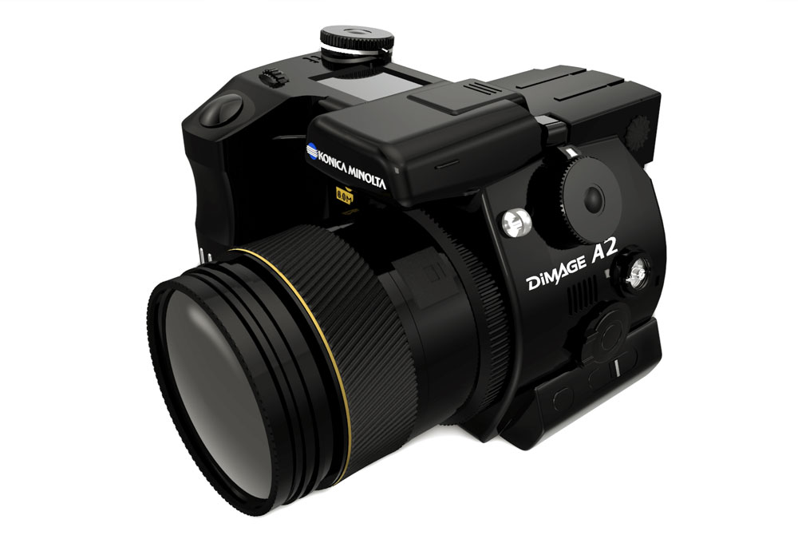
[-] Camera Interface
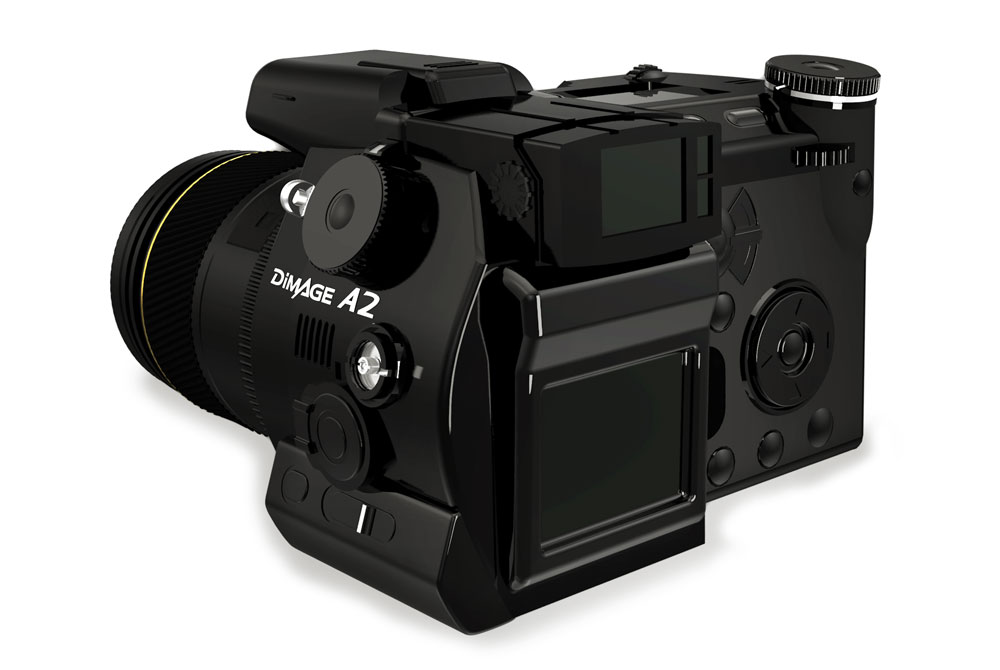
[-] Photorealistic Materials - VRay
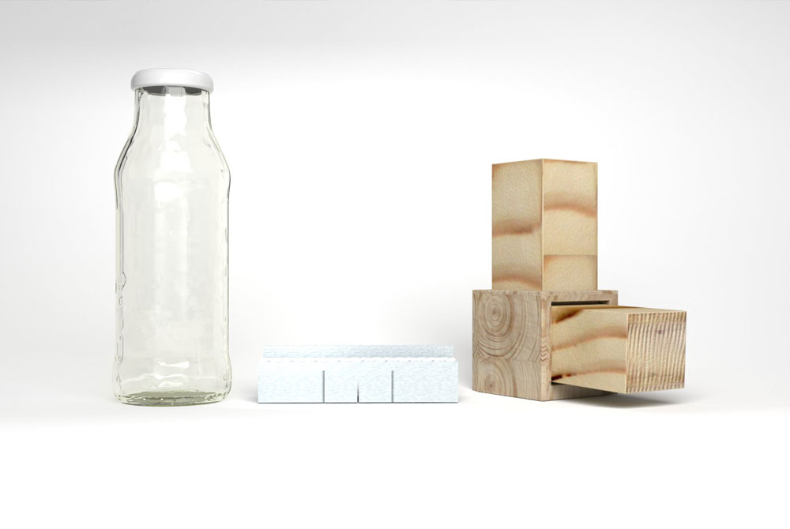
[-] Cube House Concept
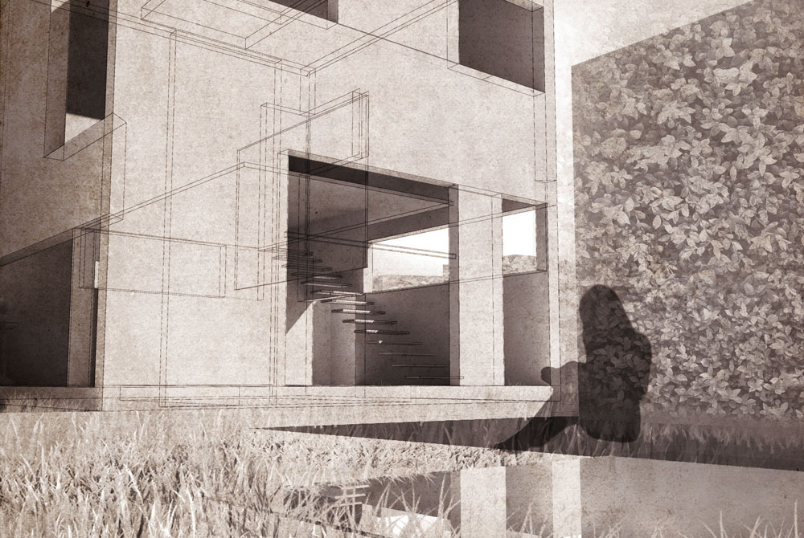
made with love and html. © Dan Cascaval 2017.